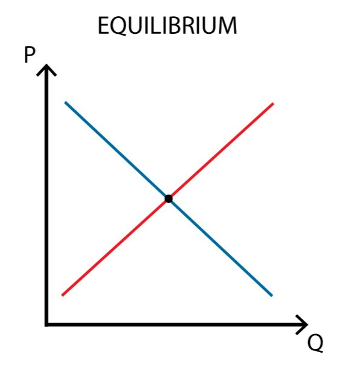
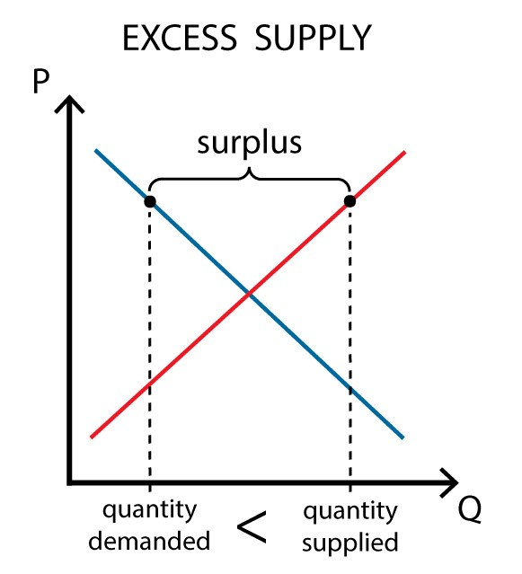
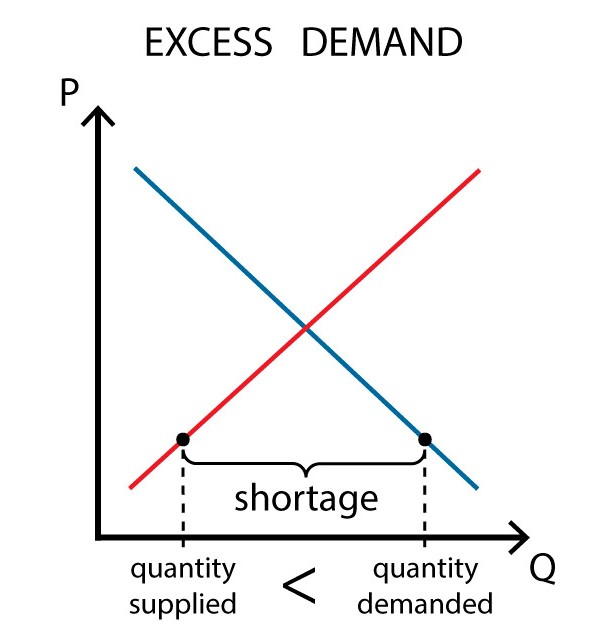

AP-EQUILIBRIUM.
Equilibrium
Kalagayan na walang labis (surplus) sa mamimili at walang kakulangan (shortage) sa nagtitinda.
Sa equilibrium, pareho ang quantity demanded at quantity supplied.
Diagram / Graph:

Label:
D = Demand
S = Supply
Equilibrium Point = Yung lugar kung saan nagtagpo ang Demand at Supply
P₁ - S₁ = surplus

P₁ - S₂ = shortage
